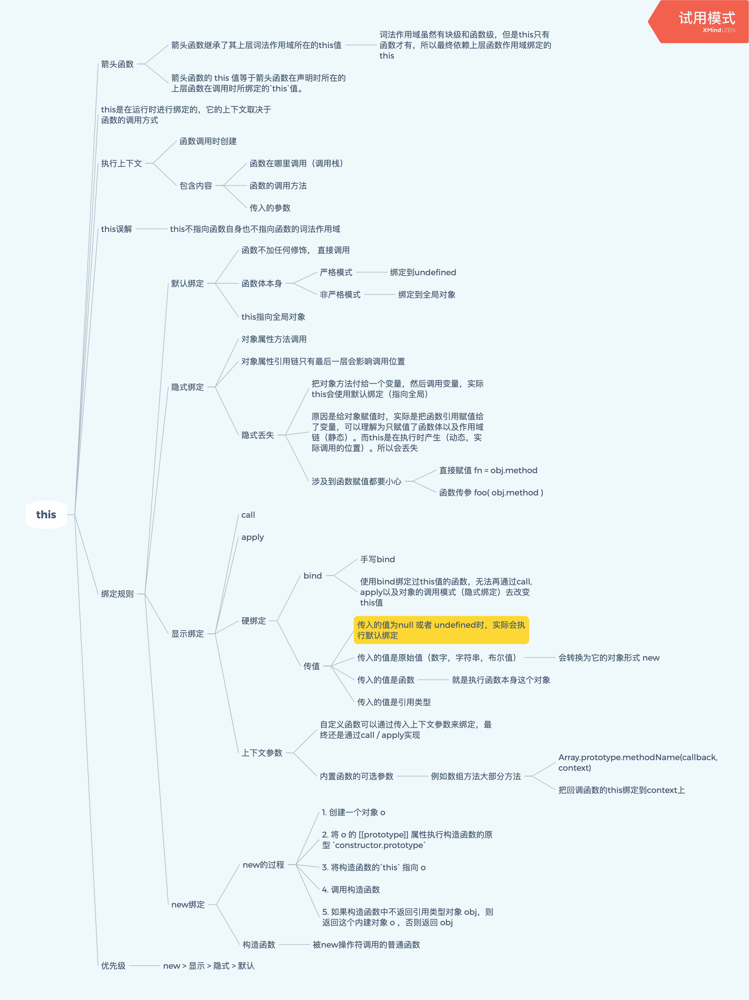
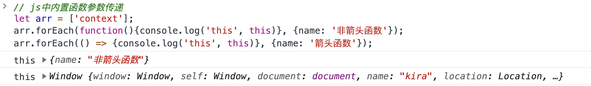
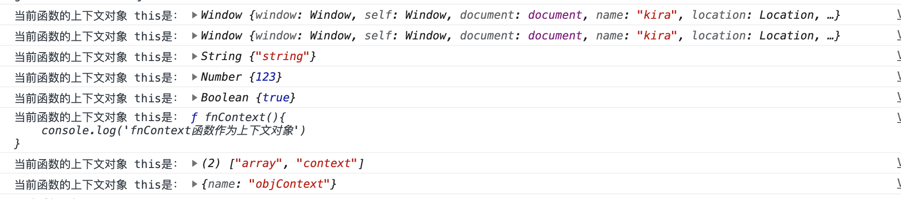
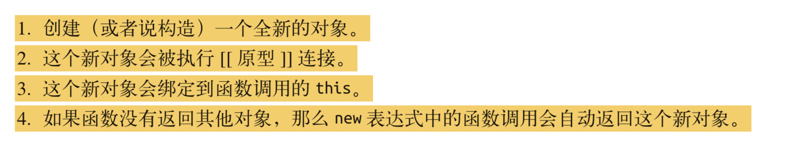
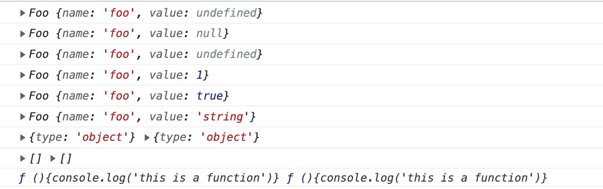
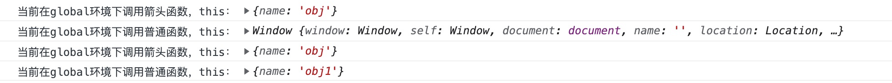
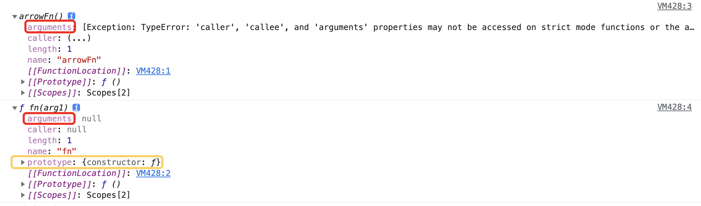
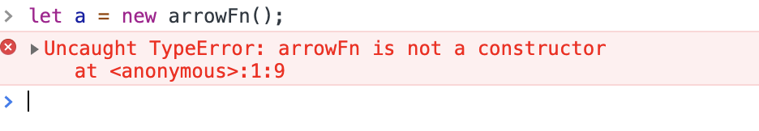

this指针和箭头函数
什么是this？
this是一个引用，指向当前函数执行的上下文对象。是在运行时绑定的。
💡 执行上下文
当 JS 引擎解析到可执行代码片段（通常是函数调用阶段）的时候，就会先做一些执行前的准备工作，这个 “准备工作”，就叫做 “执行上下文(execution context 简称 EC)“ 或者也可以叫做 执行环境。
执行上下文 为我们的可执行代码块提供了执行前的必要准备工作，例如变量对象的定义、作用域链的扩展、提供调用者的对象引用等信息。

this的绑定规则
优先级：new > 显示绑定 > 隐式绑定 > 默认绑定
默认绑定
当函数被独立调用时，默认函数的this指向全局对象，此时在浏览器运行环境中，能获取到全局对象下使用var操作符定义的变量，但不能获取到let定义的变量。
当在严格模式下时，this不能获取到全局对象下的变量。
1 | |
1 | |
隐式绑定
使用对象调用时，函数的this会指向当前调用的对象。
this 指向链式调用的最后一层
1 | |
还需要注意的是隐式绑定丢失：
当把对象 o 的方法 o.method 赋值给一个变量 fn，然后再调用这个变量 fn 的时候，this 不会指向这个对象 o，而会指向全局对象。
这是因为，赋值语句是静态执行，而 this 绑定是动态绑定。
当我们把一个函数，无论是【对象的方法】还是【普通函数】赋值给一个变量的时候，实际上我们是把当前函数的引用（也就是函数存放的地址）赋值给这个变量。
而当我们真正调用的时候，才会绑定 this ，此时对于这个函数变量来说，就是以独立的形式被调用了，所以此时 this 为默认绑定。
这种隐式丢失的情况有2种：
- 直接把对象方法赋值给一个变量
- 把一个对象方法作为参数传给另一个函数，这里因为存在给参数变量隐式赋值的步骤，所以也会丢失
1 | |
显示绑定
显示绑定是指给函数直接指定上下文参数（context）。显示绑定有4种方式：
callapplybind：关于bind绑定，要注意以下2点：- 使用
bind绑定过的函数，只有使用new方法调用才可以更改函数的this值
- 使用
js内置函数中的参数传递：例如数组原型方法中的可选参数context，会把回调函数 [ 非箭头函数 ] 的this指向传入的context这4种方式中，关于指定的
context的类型，this的指向：undefinednull: 指向全局对象stringnumberbool：指向当前值类型的原型实例function：指向函数本身- 引用类型
objectarray：指向引用对象
1 | |

1 | |
控制台打印结果：

new绑定
new 操作符的步骤

注意，使用new创建对象时，如果构造函数返回的是引用类型，则new操作生成的对象会被这个引用类型取代。
1 | |

箭头函数
箭头函数this对象
箭头函数没有this对象，或者说箭头函数的this对象早在词法分析时就已经被“绑定”为上层词法作用域（也就是函数声明时所在的作用域）的this了。
例如下面这个例子：
- 当
outer调用时，this对象被绑定为obj； - 因为箭头函数是在
outer方法中声明的，所以此时返回的箭头函数的this被“绑定”为outer实际执行时的this对象。所以无论该箭头函数在何处被调用，都不会发生改变。 - 而如果返回的是普通函数，那么该函数的
this对象就会根据调用方式而发生变化。控制台打印1
2
3
4
5
6
7
8
9
10
11
12
13
14
15
16
17
18
19
20function outer() {
let arrowFn = () => {
console.log('当前在global环境下调用箭头函数，this：', this)
}
let fn = function () {
console.log('当前在global环境下调用普通函数，this：', this)
}
return [arrowFn, fn];
}
let obj = { name: 'obj' };
let obj1 = {name: 'obj1'};
// 将outer的this绑定为obj
let [arrowFn, fn] = outer.call(obj);
arrowFn();
fn();
//绑定this
arrowFn.call(obj1);
fn.call(obj1);

箭头函数与普通函数的区别
（1）箭头函数的 this 值等于箭头函数在声明时所在的上层函数在调用时所绑定的this值。示例如上。
（2）箭头函数没有自己的 this prototype arguments super 和 new.target
1 | |
控制台打印：

（3）箭头函数的不能用作构造函数

总结
对
this对象的理解
this 是一个引用，指向当前函数的调用对象。对于非箭头函数来说，- 当独立调用函数时，
this指向全局对象； - 当函数作为对象的方法调用时，
this指向这个当前对象； - 当函数以
call，apply，bind调用，或者对于一些内置的函数例如数组的forEach，map方法，传入指定的上下文对象时，this指向绑定的上下文对象。其中根据传入的上下文对象类型，this会指向不同的对象：- 如果传入是
null或者undefined，则this指向全局对象； - 如果传入的是
number,string,boolean值，js会将当前值实例化，并将this指向其实例。（根据当前基本类型的原型对象创建实例，并将当前值作为value参数传入构造函数）； - 如果传入的是函数，则会指向函数对象本身；
- 如果传入的是引用类型，则直接指向该引用对象。
- 如果传入是
- 如果用
new调用函数，则this会指向该函数原型的实例对象。
- 当独立调用函数时，
箭头函数和普通函数的区别？
箭头函数没有自己的thisargumentsprototypesuper和new.target以及箭头函数不能作为构造函数使用箭头函数的
this指向哪里？
箭头函数的this等于其函数声明时所在的上级函数被调用时的this如果
new一个箭头函数，会发生什么？
会报错，提示箭头函数没有构造函数